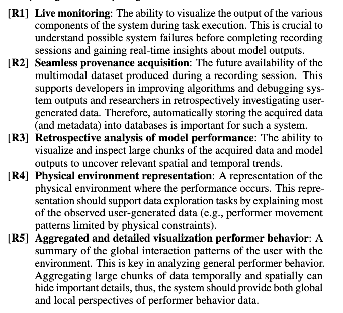
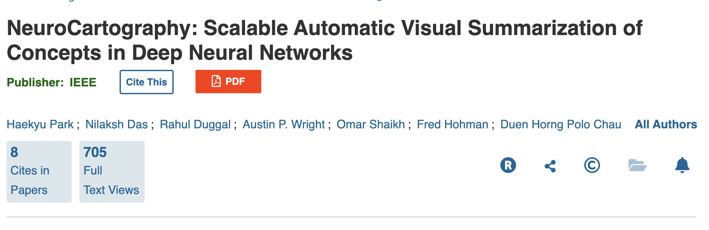
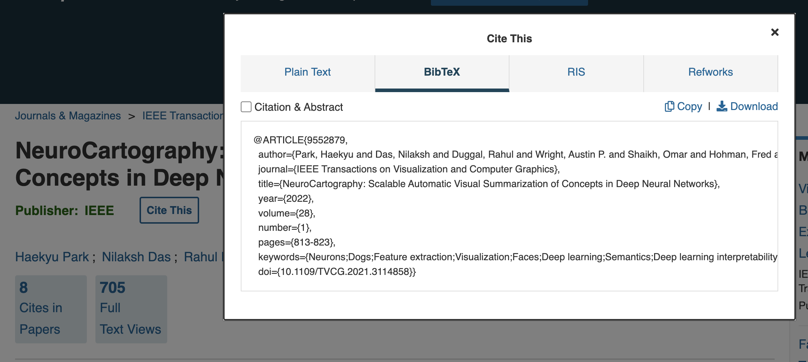
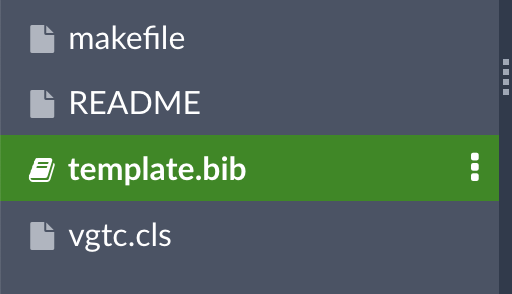
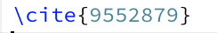
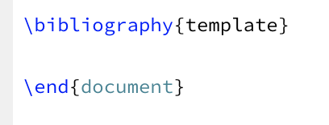
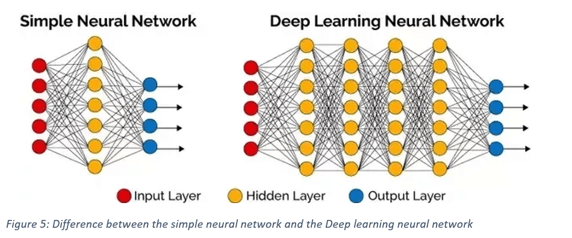

Welcome back to the Visualization for Machine Learning Lab!
Week 11: Deep Learning
Miscellaneous
- I’m writing feedback for each of your project proposals - intending to post this weekend
- Homework 4 (OPTIONAL - extra credit) has been posted to Brightspace
- Amount of extra credit TBD
- Due April 19th
How to Write a Good Research Paper
- For your final paper, you will be presenting your project in the form of a research paper
- Let’s discuss the expectations for this paper…
Why Do We Care?
- The ability to clearly communicate your ideas to a specific audience is a necessary skill for any profession - not just academia!
- ML is a fast-paced field - research papers are where the the cool new insights are, and becoming more familiar with their structure will make that information more accessible to you
A Research Paper is a Persuasive Essay
- We often view science as a sort of objective truth, when actually it is a process of logical reasoning
- A good scientific research paper will present evidence to convince you of a conclusion - some people call this the “story” of the paper
- Remember you’re not just presenting a description of what you did - you’re building an argument to convince us why what you did is important and logical
Who Is Your Audience?
- You can usually assume some level of expertise in computer science in general and the subfield of the journal (e.g. data visualization), but not necessarily in your specific topic or application
- In this class, you can assume your readers are visualization and ML experts
Each Section Serves a Different Purpose
- Some sections of a research paper (especially the intro/related works/background) may seem redundant, but they each serve a different purpose even if there is some overlap in information
Typical Sections of a Research Paper
- Abstract
- Introduction
- Related Works
- Background/Design Goals/Data Description
- Methods
- Evaluation
- Conclusion/Limitations/Future Works
- Acknowledgements
- References
The Abstract
- The first impression of your paper
- Should provide an overview of each section of the paper in around 250 words
Parts of the Abstract
- Motivation: Why do we care about the problem and the results? This section should include the importance of your work, the difficulty of the area, and the impact it might have if successful.
Parts of the Abstract
- Motivation
- Problem statement: What problem are you trying to solve? What is the scope of your work (a generalized approach, or for a specific situation)? Be careful not to use too much jargon.
Parts of the Abstract
- Motivation
- Problem statement
- Approach: How did you go about solving or making progress on the problem? What important variables did you control, ignore, or measure?
Parts of the Abstract
- Motivation
- Problem statement
- Approach
- Results: What’s the answer? Put the result there, in numbers. Avoid vague, hand-waving results such as “very”, “small”, or “significant.”
Parts of the Abstract
Motivation
Problem statement
Approach
Results
Conclusions: What are the implications of your answer? Are your results general, potentially generalizable, or specific to a particular case?
Taken from this guide, which provides more detail
The Introduction Section
- Describe the motivation behind your project
- Briefly describe how past works on this topic are insufficient
- Give an overview of your methods and contributions towards a solution to this problem
The Introduction Section
- Do
- Really sell the issue! You’re trying to convince your reader that this problem is actually important
- Don’t
- Delve into detail about any related works. Citations to back up general statements are okay.
What Are Contributions?
- Tangible products of the work described in the paper (e.g. a tool, insights in the form of case studies, expert feedback)
- Can be formatted as a bulleted list at the end of the Introduction
The Background Section
- The context necessary to understand the work YOU have done - not related works
- In this case it will probably be a description of your data and design goals, but other papers may describe work done in previous papers by the authors
What Are Design Goals?
- A list of…
- What you hope to enable your users to do
- The types of insights you hope to provide them with
- This is not a description of your contributions or the specific features of your visualizations
What Are Design Goals?

The Methods Section
- This is where you explain your work
- Remember this is still part of a persuasive argument!
- You should be justifying WHY you did what you did as you explain it
- This justification can involve citing other works
Connecting Design Goals to Methods
- Each aspect of your final product (visualizations/tool/system) should address to at least one of your design goals
The Evaluation Section
- How do you know the approach described in your Methods section worked?
- Evaluation could be quantitative metrics or a qualitative analysis
- Could put case studies here or in their own section before this depending on what they are
- Other papers would put feedback from experts here (not required for this class)
What is a Case Study?
- A case study walks the reader through an example of how they could use approach to gain valuable insights
- Typically used to demonstrate value of a tool or system and/or justify design decisions
The Conclusion Section
- Recap the contributions presented and why they are important
- Limitations
- Future works
Using BibTeX
- This is the easiest way to format your bibliography and in-text citations
Using BibTeX
- Most papers have a “cite this” button with BibTeX as a format option

Using BibTeX
- Most papers have a “cite this” button with BibTeX as a format option

Using BibTeX
- You should put this citation in the file called “template.bib” of the template provided

Using BibTeX
- You can create in-text citations by passing the \cite command the first part of the BibTeX entry

Using BibTeX
- You can generate a bibliography at the end of your document by passing the \bibliography command the name of your .bib file

Remember
- Your paper should be a persuasive argument for why your solution to the challenge you present is a reasonable one
- Think of each section and figure as a new facet of the evidence for this argument
Visualizing Deep Learning
- Yesterday, you looked at TensorFlow Playground and CNN Explainer, two visual tools for exploring the inner workings of neural networks
- There are many other tools like this, for many different types of models
Deep Neural Networks (DNNs)
- A class of machine learning algorithms that aim to mimic the information processing of the brain
- Have more than one hidden layer 
NeuroCartography
- Scalable Automatic Visual Summarization of Concepts in Deep Neural Networks
- The tool itself is available here
- The paper is available here